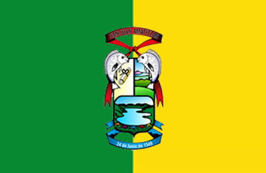

| Foto | Naci en: | Mi vida: | actual mente: |
|---|---|---|---|
|
Pablo Andrés Calito del Cid |
Nací en el país de Guatemala, en el año 2005 en un Amatitlán u n pueblo encontrado en Guatemala, el día que nací fue un 2 de febrero en el hospital de Amatitlán. |
Desde los cuatro años estudio en una escuela en Amatitlán, luego a los 6 años en un colegio llamado Kiba’l en Amatitlán, luego a los 8 años me pasaron a un colegio llamado María Julia Ramírez Gómez donde estudie hasta 3r o básico para luego ir a estudiar a Kinal |
Actualmente estudio en Fundación Kinal, entre con 16 años en 4to perito en la carrera de Informática actualmente estoy en 5to perito y tengo 17 años. |

|
 |

|
|